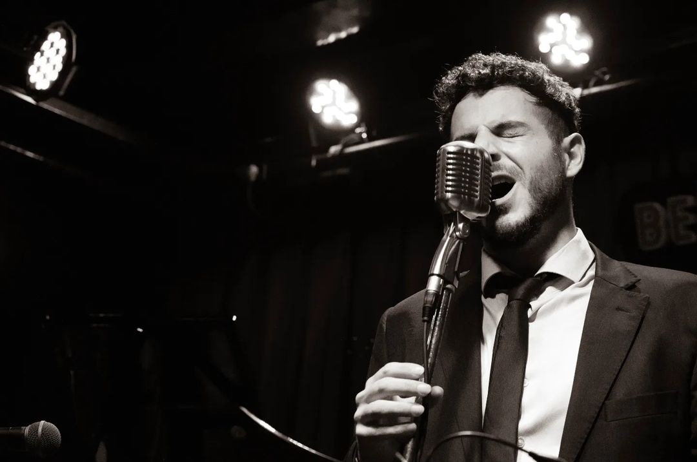

Trompeta, Guitarra y voz
Influenciado principalmente por el Jazz, la Bossa Nova y el MPB, Iván participa y produce distintos proyectos para explorar múltiples ritmos y armonías, compartiendo experiencias tan versátiles como conmovedoras a través de su guitarra, trompeta y voz. Luego de años de recorrido y formación, hoy en día participa de Eventos Nacionales e Internacionales, distintas Formaciones de Jazz y ofrece también Eventos privados.
